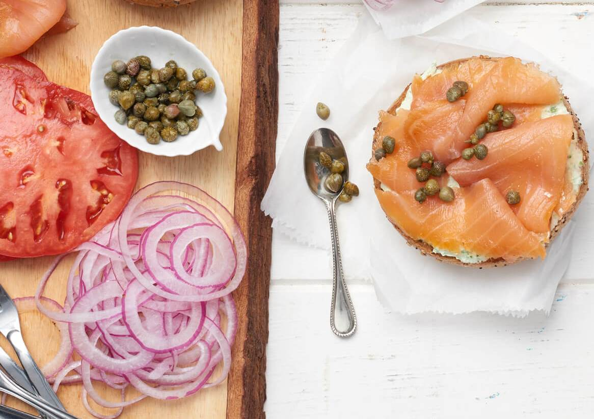
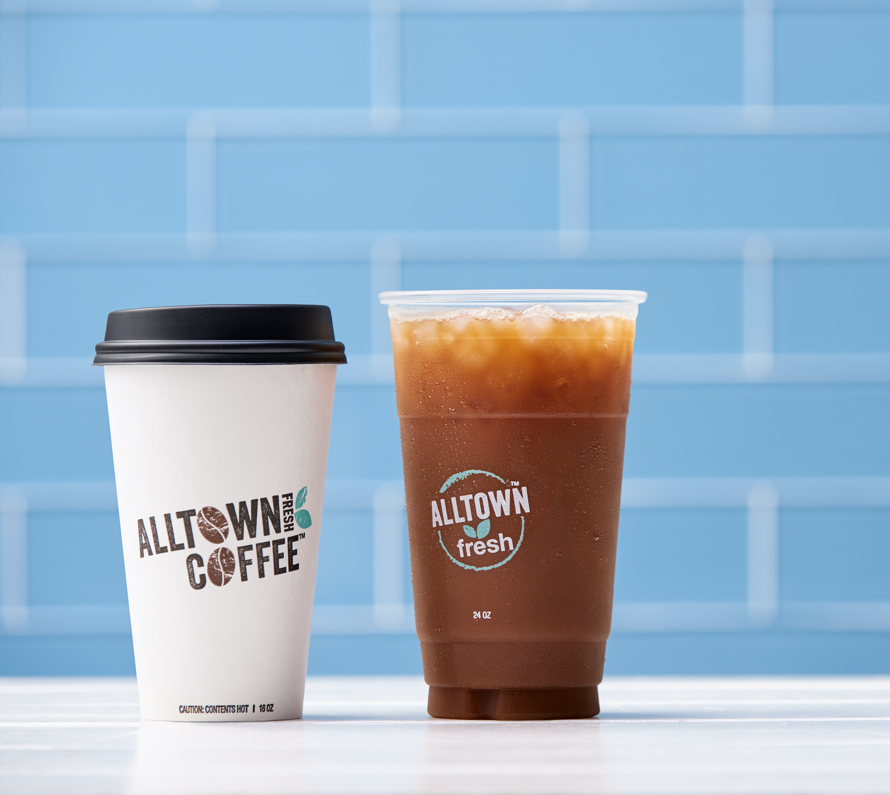

Dan Community Chamber
Join Dan Chamber Today!Dan Community Chamber's Restaurant
Visit us every day for your wonderful taste meal that we prepared just for you at our shop located 540, Brick City-FCT-Abuja, Pox 1956-Garki, Abuja-Nigeria check us out for more information
Summarry of the Weather
Wind:
3.4 km/h
Wind Chill:
N/A
Fresh News Release
We are dedicated to bringing our guests a tast of coffee that would some experience in a convenient and affordable on-the-go. Our coffee is always in small batches to deliver the most fresh cup of coffee possible.
Join us!
Discover how to join the Dan chamber of commerce and how it will benefit your organization with some fresh coffee arrange just for you!
Dan Chamber Deliverable
Fresh and chamming specialty spices put in places by Dan Chamber of Commerce so you would have the great experience
{kind=link}
Tel: +234 (0) 810-175-6091-00
dancommunity@gmail.com --|--- dan21017@byui.eduCool and Freshy
Dan Chamber of Commerce is reknown for it purposeful activities that is always bringing the best food to it clients
Tel: +234 (0) 810-175-6091-00
dancommunity@gmail.com --|--- dan21017@byui.eduCoffee is seen intersting by our customer who loves it because of it coolness
We are call one of the best kitchen producing fresh food
Tel: +234 (0) 810-175-6091-00
dancommunity@gmail.com --|--- dan21017@byui.edu